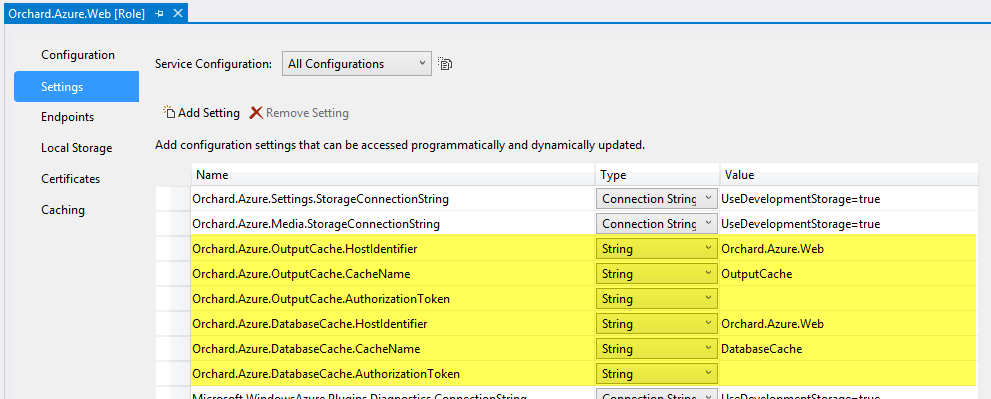
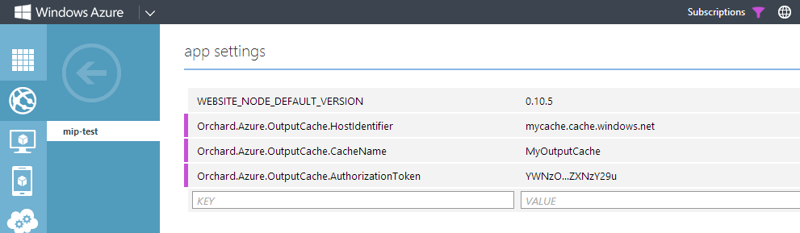

Windows Azure Caching is a distributed memory-based cache service that is part of Windows Azure. Orchard ships with two native providers for Windows Azure Caching, allowing Orchard to use Windows Azure Caching as the cache implementation for both output caching and database caching (NHibernate second-level caching). This topic describes how to configure and enable this functionality.
Overview
Support for Windows Azure Caching comes in the form of two features in the Orchard.Azure module:
Orchard.Azure.OutputCache:
Name: Windows Azure Output Cache
Description: Activates an Orchard output cache provider that targets Windows Azure Cache.
Dependencies: Orchard.OutputCache
Category: Performance
Orchard.Azure.DatabaseCache:
Name: Windows Azure Database Cache
Description: Activates an NHibernate second-level cache provider that targets Windows Azure Cache.
Category: Performance
These two features can be enabled separately or in combination.
They both configure Orchard to use Windows Azure Caching as the cache implementation. This is primarily useful when running Orchard in a server farm configuration. As mentioned above, Windows Azure Caching is a distributed memory-based cache service. Without using some form of distributed cache, caches will become out of sync between the different nodes in your farm.
Role-based Cache vs Cache Service
Both features have been designed to work with both Windows Azure Role-based Caching and Windows Azure Cache Service. Role-based Caching can be used only from within a Windows Azure Cloud Service. Cache Service is called via public HTTP endpoints and can be used from anywhere, irrespective of hosting environment.
The caching providers are configured slightly differently depending on which flavor to use. See the Configuration reference section for more information.
Enabling for Windows Azure Cloud Services
When deploying Orchard to a Windows Azure Cloud Service using the Orchard.Azure.sln solution, the resulting package is already preconfigured with everything required to enable the caching features. By default the cloud service project is configured for co-located role-based caching with 30% of the role instance memory allowed for cache usage.
The only thing you need to change before deploying is the connection string of the storage account you want to use to maintain the cache cluster's runtime state:

- Open
Orchard.Azure.sln. - Navigate to
Orchard.Azure.CloudService, double click the roleOrchard.Azure.Webto bring up its property page, and navigate to the Caching tab. - Configure the connection string of the storage account you want to use.
- Deploy the cloud service.
After deploying you can simply enable the features Windows Azure Output Cache and/or Windows Azure Database Cache in the admin dashboard.
Customizing the configuration
You can customize any of the preconfigured settings according to your requirements. For example you might want to:
- Change the configuration from co-located to dedicated role-based caching by adding a dedicated caching role to the cloud service.
- Change the expiration settings of the preconfigured named caches.
- Use a different set of named caches.
- Use Cache Service instead of role-based cache (even if you're running in a cloud service).
This can all be done by reconfiguring the cloud service project.
To reconfigure the expiration settings or set of named caches, use the Caching tab of the cloud service project:

Just remember that you must also reconfigure the provider settings to match whatever cache configuration you create, using the Settings tab of the cloud service project:

Enabling for Windows Azure Web Sites
NOTE: When running Orchard in a Windows Azure Web Site only Cache Service can be used - using Role-based Cache is not possible.
Before the caching features can be enabled you must configure the URL and credentials of the cache clusters you want to use. This can be done either before deploying (in Web.config) or after deploying (in the Windows Azure management portal).
Configuring cache cluster settings before deploying:
- Open
Orchard.sln. - Navigate to
Orchard.Weband open theWeb.configfile. - For output caching, in the
<appSettings>element add the following settings:Orchard.Azure.OutputCache.HostIdentifierOrchard.Azure.OutputCache.CacheNameOrchard.Azure.OutputCache.AuthorizationToken
- For database caching, in the
<appSettings>element add the following settings:Orchard.Azure.DatabaseCache.HostIdentifierOrchard.Azure.DatabaseCache.CacheNameOrchard.Azure.DatabaseCache.AuthorizationToken
- Deploy the web site.
Here's an example configuration:
<appSettings>
<!-- Output caching -->
<add key="Orchard.Azure.OutputCache.HostIdentifier" value="mycache.cache.windows.net" />
<add key="Orchard.Azure.OutputCache.CacheName" value="MyOutputCache" />
<add key="Orchard.Azure.OutputCache.AuthorizationToken" value="YWNzO...ZXNzY29u" />
<!-- Database caching -->
<add key="Orchard.Azure.DatabaseCache.HostIdentifier" value="mycache.cache.windows.net" />
<add key="Orchard.Azure.DatabaseCache.CacheName" value="MyDatabaseCache" />
<add key="Orchard.Azure.DatabaseCache.AuthorizationToken" value="YWNzO...ZXNzY29u" />
</appSettings>
In the above example, the same cache service is used for both types of caching, but different named caches (MyOutputCache and MyDatabaseCache, respectively). Of course you are also free to use completely different cache services if you like. Note that if you want to use the default cache instead of a custom named cache, the setting for CacheName is optional and can be omitted.
Refer to the Configuration reference section for more details on how to configure each setting.
You can now enable the features Windows Azure Output Cache and/or Windows Azure Database Cache in the admin dashboard.
Configuring cache cluster settings after deploying:
- Deploy the web site.
- In the management portal, navigate to your web site and select the Configure tab.
- For output caching, under App settings add the following settings:
Orchard.Azure.OutputCache.HostIdentifierOrchard.Azure.OutputCache.CacheNameOrchard.Azure.OutputCache.AuthorizationToken
- For database caching, under App settings element add the following settings:
Orchard.Azure.DatabaseCache.HostIdentifierOrchard.Azure.DatabaseCache.CacheNameOrchard.Azure.DatabaseCache.AuthorizationToken
- Click Save.
Here's an example configuration:

Refer to the Configuration reference section for more details on how to configure each setting.
You can now enable the features Windows Azure Output Cache and/or Windows Azure Database Cache in the admin dashboard.
Enabling for any other hosting
To enable the features when running Orchard in any other hosting environment, use the Web.config method described above. Once the appropriate settings have been added to the <appSettings> element, can enable the features Windows Azure Output Cache and/or Windows Azure Database Cache in the admin dashboard.
Configuration reference
Both Windows Azure Output Cache and Windows Azure Database Cache share the same configuration structure, differing only by a prefix added to each setting. The prefix is Orchard.Azure.OutputCache. or Orchard.Azure.DatabaseCache. respectively.
These settings are read from platform configuration using the CloudConfigurationManager class, which means they can be configured either in cloud service role configuration settings, web site configuration settings or the <appSettings> element in Web.config.
| Setting | Description |
|---|---|
HostIdentifier |
When using role-based caching, set this to the name of the cloud service role hosting the cache cluster. Auto discover will be used to resolve the cache cluster hostname at runtime. When using Windows Azure Cache Service, set this to the endpoint hostname of your cache service, e.g. fabrikam.cache.windows.net. |
CacheName |
Set this to the name of a named cache, or leave blank to use the default cache. |
AuthorizationToken |
When using Windows Azure Cache Service, set this to the authorization token used to connect to the cache service endpoint. |
Here's an example configuration using Web.config. This configures Windows Azure Output Cache to use the default cache on a Windows Azure Cache Service endpoint:
<appSettings>
<add key="Orchard.Azure.OutputCache.HostIdentifier" value="mycache.cache.windows.net" />
<add key="Orchard.Azure.OutputCache.CacheName" value="" />
<add key="Orchard.Azure.OutputCache.AuthorizationToken" value="YWNzO...ZXNzY29u" />
</appSettings>
Here's the default role configuration when deploying to a cloud service:

Multi-tenancy configuration
For multi-tenancy scenarios each setting can optionally be prefixed with a tenant name followed by colon, such as SomeTenant:Orchard.Azure.OutputCache.HostIdentifier. Whenever the caching providers read configuration settings they will always first look for a setting specific for the current tenant, and if no such setting exists, fallback to the default non-prefixed setting.
Here's an example Azure Web Site configuration with two tenants, both using output caching with a named cache OutputCache on the Windows Azure Cache Service, but each using its own cache service instance:
<appSettings>
<!-- Settings for Tenant1 -->
<add key="Tenant1:Orchard.Azure.OutputCache.HostIdentifier" value="mycache1.cache.windows.net" />
<add key="Tenant1:Orchard.Azure.OutputCache.AuthorizationToken" value="YWNzO...ZXNzY29u" />
<!-- Settings for Tenant2 -->
<add key="Tenant2:Orchard.Azure.OutputCache.HostIdentifier" value="mycache2.cache.windows.net" />
<add key="Tenant2:Orchard.Azure.OutputCache.AuthorizationToken" value="FQdOS...ImNXFtSJ" />
<!-- Common settings -->
<add key="Orchard.Azure.OutputCache.CacheName" value="OutputCache" />
</appSettings>
Session state caching
In addition to output caching and database caching, session state storage is also sensitive to server farm scenarios, primarily in solutions where there is no session affinity in the load balancer. The load balancer used in Windows Azure Cloud Services is one example of this.
For this reason the web role in the cloud service project (Orchard.Azure.Web) is preconfigured through Web.config to use an ASP.NET session state provider that targets Windows Azure Cache. While this provider is enabled, all session state is stored in the distributed cache. This means it is safe for the same user to end up at one farm node in one request and another farm node in the next request, without running the risk of losing her state.
NOTE: This is not necessary when running Orchard in a Windows Azure Web Site as the load balancer here maintains session affinity using cookies.
The preconfigured settings in Web.config when deploying to a cloud service is described below. To configure session state caching in any other hosting scenarios, you can modify your Web.config file accordingly before deploying.
First, a configuration section is added:
<configSections>
...
<section name="dataCacheClients" type="Microsoft.ApplicationServer.Caching.DataCacheClientsSection, Microsoft.ApplicationServer.Caching.Core" allowLocation="true" allowDefinition="Everywhere" />
</configSections>
Next, a cache client is configured:
<dataCacheClients>
<dataCacheClient name="DefaultCacheClient" useLegacyProtocol="false" connectionPool="true" maxConnectionsToServer="20">
<autoDiscover isEnabled="true" identifier="Orchard.Azure.Web" />
</dataCacheClient>
</dataCacheClients>
Finally, session state is configured to use the Azure Cache provider and the cache client defined above:
<sessionState mode="Custom" timeout="60" customProvider="CacheSessionStateProvider">
<providers>
<!-- Set the cacheName attribute to be the name of the configured logical cache to use for session state storage. -->
<add name="CacheSessionStateProvider" type="Microsoft.Web.DistributedCache.DistributedCacheSessionStateStoreProvider, Microsoft.Web.DistributedCache" cacheName="SessionStateCache" dataCacheClientName="DefaultCacheClient" applicationName="Orchard" />
</providers>
</sessionState>
The configuration of the session state provider can be customized by editing Web.config before deploying the cloud service. To disable the session state provider, simply comment out the above sections from Web.config before deploying the cloud service.